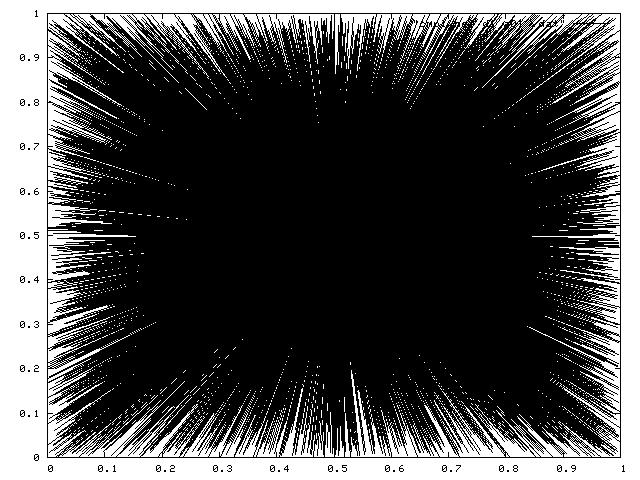
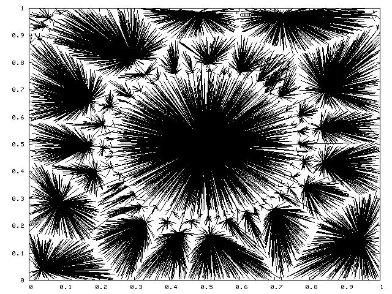
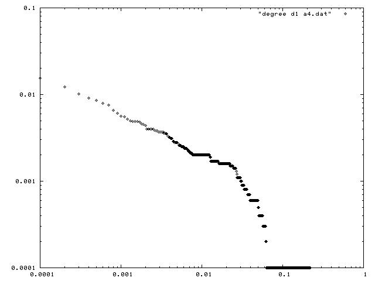
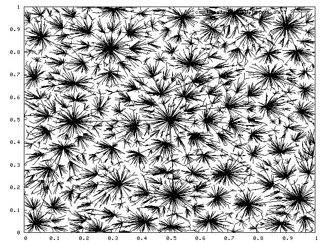
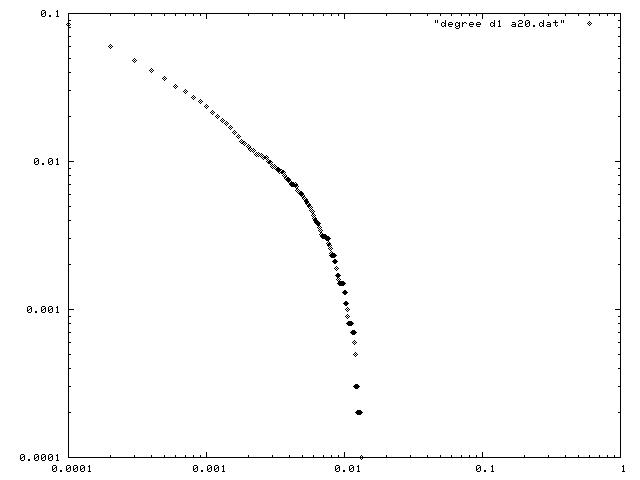
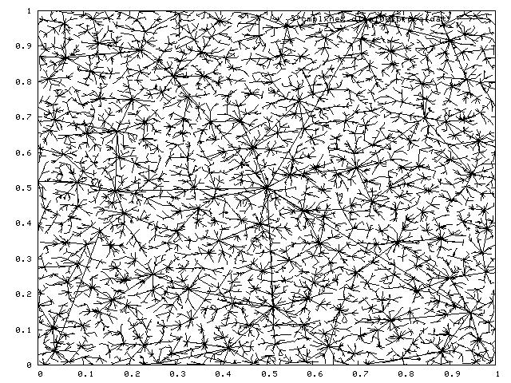
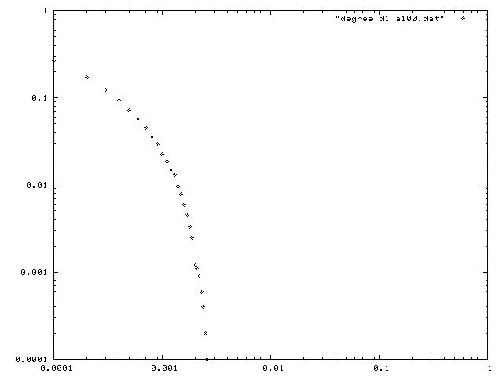
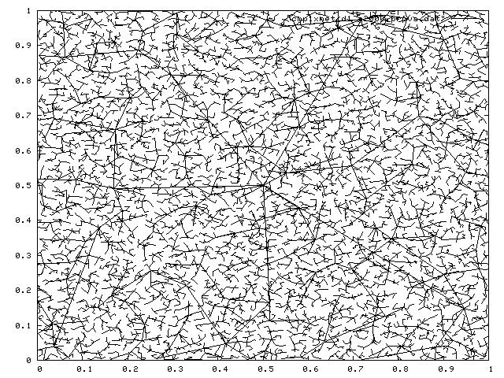
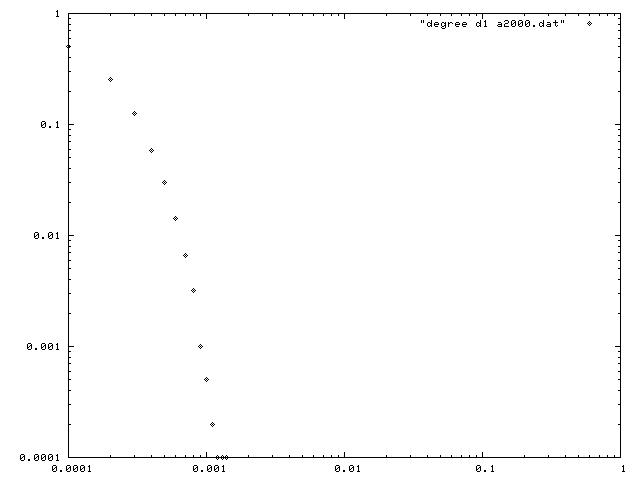

Last update: $date 2004/05/27 17:22:08 $
Introduction
This tutorial teaches you how to build from
scratch a new peersim (
http://sourceforge.net/projects/peersim)
topology generator.
In order to understand this tutorial, the reader is encouraged to start
reading the first peersim tutorial:
http://peersim.sourceforge.net/peersim_HOWTO.html
to have an idea of the basic concepts that will not be discussed any
further in this document.
The aim of this tutorial is to be as pratical as possible; the goal is
to give the reader ideas about technical or intermediate level features
of peersim and to encurage him/her to experiment further.
The full source code discussed in this document is available via CVS at
peersim project page
in the
peersim.example.hot
class package.
What is a topology?
The network abstraction in peersim is a (sometimes huge) array of Node
structures (interfaces); because of the size of the network and to
overcome
scalability problems, usually in large P2P networks each node knows
about the
existence of a very small subset of other nodes (ex: order of log(N)
where N is
the whole network size). Thus each node has a short list of other node
references, usually called "neighbors", build accordingly to some kind
of
strategy or rule.
Thus, we can say that a topology is how nodes are arranged (linked)
together and
clearly this depends upon the particular choosen rule.
Examples of topology are the following (not exaustive at all):
- random graphs
- Watts-Strogatz model graph
- star model
- ring model
- lattice model
- ...
Which rule to choose?
In this document, we have choosen to code a particular topology
generator to build internet-like tree topologies. The building process
is based on the
preferential
attachment approach. The rule
applied is
quite simple and takes into account geometric and network constraints
to better mimic real world network. The preferential attachment choice
can be affected by a parameter (alpha) that amplifies or reduces the
geometric location influence in favor of the path distance.
The rule strategy is the following: we consider a square unit region D,
then we start with node x(0) choosen at random and we set W(x(0)) = 0
(it
is
the root node). For each i with i = 1...n-1 we choose a new node x(i)
in
the region D and we connect it to an
early
inserted node x(j) that
minimize the following formula:
W(x(j))
+ alpha * dist(x(i),
x(j)) with 0 <= j < i
where:
- W(x(j)) is the distance in terms of hops (the path distance from
node x(j) to the root node);
- dist(...) is the usual Euclidean distance;
- alpha is a weight parameter that can minimize or maximize the
geometric distance influence;
After having choosen a node x(j), we set W(x(i)) = W(x(j))+1 .
At the end we obtain a tree rooted in x(0).
We have extended this model to improve robustness allowing every node
to have exactly d outbound neighbors instead of only one. This means
that at the time of joining the network, each node should have at least
d candidates to be selected as neighbors. To achieve this property, as
a first step we select at random exactly d root nodes and we connect
them together in a ring fashion (a doubly linked list). In this way
each ordinary node has at least d nodes (the d roots) to choose from in
order to select its neighbors; in other words, each node has to select
d nodes that minimize the
function
above.
To get further details about this model, we
suggest the following
readings:
- "Heuristically Optimized Trade-offs: A New Paradigm for Power
Laws in the Internet" (fkp02.pdf)
- "Degree distributions of the FKP network model" (icalp03.pdf)
- "On Power-Law Relationships of the Internet Topology" (fff.ps)
The model should generate a topology that exibits a power-law bound on
the in-degree sequence of nodes; but, as atated in paper [2],
this power-law prediction is not true.
What we need to code
In order to run this model in peersim we need to write java classes
extending some peersim tipical interfaces. Very in brief, we need:
- the protocol class: the protocol itself does nothing because we
want something that automagically builds this topology model from a raw
list of unconnected nodes; we are not interested in running any piece
of code over time (cycles in peersim terminology). This class is a sort
of structure to collect some needed values such as the node space
coordinates, the hop distance, the in degree counter and so on. The
reader can think
to this class as "glue code".
- the initializer class: it extends the Initializer interface and deal with
all the initialization process. As we'll see further, the initializer
code itself is very compact because all the building process complexity
is hidden in a custom made factory pattern class. Please note that we
don't need explicitly an Observer object because we are not
interested in
observing any behaviour over time; due to that, the code to track down
informations about the actual generated tree (coordinates and indegree
distribution) are embeeded into the initializer.
Code writing
Protocol class
As we stated so far, the protocol code is very short:
package inet;
import peersim.core.IdleProtocol;
public class InetNodeProtocol
extends IdleProtocol {
// coordinates
in space:
public double
x;
public double
y;
public int
in_degree;
public int
hops;
public boolean
isroot;
/** Creates a
new instance of hotNodeProtocol */
public
InetNodeProtocol(String prefix, Object obj) {
super(prefix);
in_degree = 0;
hops = 0;
isroot = false;
}
public Object
clone() throws CloneNotSupportedException {
InetNodeProtocol af = (InetNodeProtocol)
super.clone();
...
return af;
}
public void
nextCycle(peersim.core.Node node, int protocolID) {
}
}
The nextCycle() method is empty, so it's presence is completely
optional. The class is basically a structure incapsulated in an object.
Initializer class
This initializer can be considered as a public interface to the model.
From the outside (means from the peersim configuration file) only few
main parameters are needed, such as the
Linkable
enabled protocol, the outbound degree and the alpha parameter. The
constructor
method takes care of collecting these parameters or to set up the
corrisponding default values The actual structure generation is
performed elsewhere.
public class InetInitializer
implements peersim.init.Initializer {
/**
* String
name of the parameter that defines the protocol to initialize.
* Parameter
read will has the full name
*
<tt>prefix+"."+PAR_PROT</tt>
*/
public static
final String PAR_PROT = "protocol";
/**
* String
name of the parameter about the out degree value.
*/
public static
final String PAR_OUTDEGREE = "d";
/**
* String
name of the parameter used as a weight.
*/
public static
final String PAR_ALFA = "alfa";
/**
* String
name of the parameter used as a maximum x or y coordinate. All the
* nodes
are on a square region.
*/
public static
final String PAR_MAX_COORD = "max_coord";
....
/** Creates a
new instance of InetInitializer */
public
InetInitializer(String prefix) {
// super(prefix);
pid = Configuration.getInt(prefix+"."+PAR_PROT);
d = Configuration.getInt(prefix+"."+PAR_OUTDEGREE);
alfa = Configuration.getDouble(prefix+"."+PAR_ALFA);
graph_filename = "cmplxnet_d"+ d
+ "_alfa"+alfa+".dat";
dg_filename = "degree_d"+ d
+ "_alfa"+alfa+".dat";
maxcoord = Configuration.getDouble(prefix + "." + PAR_MAX_COORD, 1.0);
if ( !graph_filename.equals("") ) {
try { graph_fileout = new PrintWriter(new FileWriter(graph_filename));
System.out.println(prefix +" filename: "+graph_filename +" selected");}
catch (Exception e) {;}
}
if ( !dg_filename.equals("") ) {
try { dg_fileout = new PrintWriter(new FileWriter(dg_filename));
System.out.println(prefix +" filename: "+dg_filename +" selected");}
catch (Exception e) {;}
}
}
The initialize() method is defined by the
Initializer interface; it invokes a
specialized factory object that works on top of a
OverlayGraph type object (actual
implementation of the
Graph
interface). This object provides the high level abstraction of a
graph on
the simulator overlay network; in this way, it allows the application
to
use many well known graph algorithms and operations (many operations
can be found in
peersim.graphGraphAlgorithms
class). The operations
performed on it are reflected on the actual topology (ex: adding an
edge).
public
void initialize() {
OverlayGraph ogr = new OverlayGraph(pid);
InetFactory.InetTree(ogr, CommonRandom.r, pid, maxcoord, d, alfa );
graphToFile(ogr);
dgDistribToFile(ogr);
}
}
The other two method invocation in the
initialize() method are
used to write data on disk. In the first one, for each node n the x and
y coordinates are collected and then for each neighbor i of node n the
cordinates are written in the following order:
n.neighbor(i).x n.neighbor(i).y \newline
n.x n.y \newline
\newline
The particular line triplet formatting order suits the gluplot needs.
Please note that the for loop starts from index d, not from 0; this
means that the root node(s)
is not directly considered because it has not any outbound connections,
but only inbound connections. Nevertheless the root node(s) are plotted
inspecting the nodes that are linked directly to it.
private void
graphToFile(peersim.graph.Graph g) {
if (graph_fileout != null) {
try {
for (int i = d ; i < g.size() ; i++ ) {
Node current = (Node)g.getNode(i);
double x_to = ((InetNodeProtocol)current.getProtocol(pid)).x;
double y_to = ((InetNodeProtocol)current.getProtocol(pid)).y;
Iterator it = (Iterator)g.getNeighbours(i).iterator();
while (it.hasNext()) {
int index = ((Integer)it.next()).intValue();
Node n = (Node)g.getNode(index);
double x_from = ((InetNodeProtocol)n.getProtocol(pid)).x;
double y_from = ((InetNodeProtocol)n.getProtocol(pid)).y;
graph_fileout.println(x_from+" "+y_from);
graph_fileout.println(x_to+" "+y_to);
graph_fileout.println("");
}
}
graph_fileout.close();
}
catch (Exception e) {;}
}
}
The second data collecting method builds an array of indegree
frequencies and an array of indegree probability and dumps the second
collection to file.
private
void dgDistribToFile(peersim.graph.Graph g) {
if (dg_fileout != null) {
int size = g.size();
try {
int[] dgfrq = new int[size];
double[] dgprob = new double[size];
for (int i = 0 ; i < size ; i++) { // do not plot leaves
Node n = (Node)g.getNode(i);
InetNodeProtocol protocol = (InetNodeProtocol)n.getProtocol(pid);
int degree = protocol.in_degree;
dgfrq[degree]++;
}
double sum = 0;
for (int i = size-1 ; i > 0 ; i--) {
dgprob[i] = (dgfrq[i] + sum)/size;
sum += dgfrq[i];
}
// do not count index 0: 'cos the leafs degree is clearly 0!
for (int i = 0 ; i < dgprob.length ; i++ ) {
double k = (double)i/size;
dg_fileout.println(k+"
"+dgprob[i]);
}
dg_fileout.close();
}
catch (Exception e) {e.printStackTrace();
System.out.println(e);}
}
}
}
Factory class
This class is the core one. The actual topology initialization is
performed here. Because of the factory pattern, al the methods in this
class are static. There is no need of getting parameters from the
configuration file, because they have been already collected by the
initializer class; thus the factory is completely hidden.
This implementation is an extention of the peersim standard topology
factory (
peersim.graph.GraphFactory).
The only public method is the one that actually builds the topology:
InetTree(); as parameters it
gets all the parameters that the
initializer class has collected. The steps performed are the following:
- set the correct values for the d (at least one!) roots, including
coordinates; if there is only one root, its coordinates are centered on
the square (edge size 1.0 by default), otherwise the coordinates are
random (as any ordinary node).
- initialize the coordinates and the indegree counter for each
ordinary node.
- if there are more than one root node, than these root nodes are
joined together in a ring (connections are non oriented). As an
exercise, the reader
can
change this choice implementing something else (ex: putting the root
nodes in a fully connected topology or a random graph or whatever).
- for each node n other than the root, take exactly d nodes that
minimizes the formula and
connect node n to those d nodes.
The other present methods are all private and can be considered as
utility methods. Infact their function is quite straightforward and can
be guessed by the method signature; nevertheless a few comments are
presented in the following table:
getParents()
|
get the the
current node best d candidates to connect to |
hops()
|
return the graph distance in
terms of hops from the root of the node given as a parameter
|
minHops()
|
return the minimum hop valued
node between the specified nodes
|
distance()
|
get the standard Euclideian
distance between two nodes
|
package inet;
import hot.HotNodeProtocol;
import peersim.graph.*;
import peersim.core.Node;
import peersim.core.Linkable;
import peersim.core.Network;
import
peersim.config.Configuration;
import java.util.Random;
import java.util.ArrayList;
import java.util.Arrays;
public class InetFactory extends
peersim.graph.GraphFactory {
private static
final String DEBUG_STRING = "inet.InetFactory: ";
public
InetFactory() {
super();
}
public static
Graph InetTree(Graph g, Random rnd, int pid, double maxcoord, int
outdegree, double alfa) {
int size = g.size(); // size of the network
System.out.println(DEBUG_STRING+"size: "+size+" outdegree: "+outdegree);
// build outdegree roots
System.out.println(DEBUG_STRING+"Generating "+outdegree+" root(s),
means out degree "+outdegree+"...");
for(int i = 0 ; i < outdegree ; ++i) {
Node n = (Node)g.getNode(i);
HotNodeProtocol prot = (HotNodeProtocol)n.getProtocol(pid);
prot.isroot = true;
prot.hops = 0;
prot.in_degree = 0;
if (outdegree
== 1 ) {
prot.x = maxcoord/2;
prot.y = maxcoord/2;
}
else
{ // more than one root
if (rnd.nextBoolean() ) {
prot.x = maxcoord/2 + (rnd.nextDouble() * 0.1);
}
else {
prot.x = maxcoord/2 - (rnd.nextDouble() * 0.1);
}
if (rnd.nextBoolean() ) {
prot.y = maxcoord/2 + (rnd.nextDouble() * 0.1);
}
else {
prot.y = maxcoord/2 - (rnd.nextDouble() * 0.1);
}
System.out.println("root coord: "+prot.x+" "+prot.y);
}
}
// Set coordinates x,y and set indegree 0
System.out.println(DEBUG_STRING+"Generating random cordinates for
nodes...");
for (int i = outdegree ; i < size ; i++) {
Node n = (Node)g.getNode(i);
HotNodeProtocol prot = (HotNodeProtocol)n.getProtocol(pid);
if (maxcoord ==
1.0) {
prot.x = rnd.nextDouble();
prot.y = rnd.nextDouble();
}
else
{
prot.x = rnd.nextInt((int)maxcoord);
prot.y = rnd.nextInt((int)maxcoord);
}
prot.in_degree = 0;
}
// Connect the roots in a ring if needed (thus, if there are more than 1
// root nodes.
if (outdegree > 1) {
System.out.println(DEBUG_STRING+"Putting roots in a ring...");
for (int i = 0 ; i < outdegree ; i++) {
Node n = (Node)g.getNode(i);
((HotNodeProtocol)n.getProtocol(pid)).in_degree++;
n = (Node)g.getNode(i+1);
((HotNodeProtocol)n.getProtocol(pid)).in_degree++;
g.setEdge(i, i+1);
g.setEdge(i+1, i);
}
Node n = (Node)g.getNode(0);
((HotNodeProtocol)n.getProtocol(pid)).in_degree++;
n = (Node)g.getNode(outdegree);
((HotNodeProtocol)n.getProtocol(pid)).in_degree++;
g.setEdge(0, outdegree);
g.setEdge(outdegree, 0);
}
// for all the nodes other than root(s), connect them!
for (int i = outdegree ; i < size ; ++i ) {
Node n =
(Node)g.getNode(i);
InetNodeProtocol prot = (InetNodeProtocol)n.getProtocol(pid);
prot.isroot = false;
// look for a siutable parent node between those allready part of the
// overlay topology: alias FIND THE MINIMUM!
Node candidate = null;
int candidate_index = 0;
double min = Double.POSITIVE_INFINITY;
if (outdegree > 1) {
int candidates[] = getParents(g, pid, i, outdegree, alfa);
for (int s = 0 ; s < candidates.length ; s++) {
g.setEdge(i, candidates[s]);
System.out.print(i+", ");
}
prot.hops = minHop(g, candidates, pid) + 1;
}
else { // degree 1:
for (int j = 0 ; j < i ; j++) {
Node parent = (Node)g.getNode(j);
InetNodeProtocol prot_parent =
(InetNodeProtocol)parent.getProtocol(pid);
double value = hops(parent, pid) +
(alfa * distance(n, parent, pid));
if (value < min) {
candidate = parent; // best parent node to connect to
min = value;
candidate_index = j;
}
}
prot.hops = ((InetNodeProtocol)candidate.getProtocol(pid)).hops + 1;
g.setEdge(i, candidate_index);
((HotNodeProtocol)candidate.getProtocol(pid)).in_degree++;
}
}
System.out.println(DEBUG_STRING+"Graph generation finished!");
return g;
}
private static
int[] getParents(Graph g, int pid, int cur_node_index, int how_many,
double alfa) {
int result[] = new int[how_many];
ArrayList net_copy = new ArrayList(cur_node_index);
// fill up the sub net copy:
for (int j = 0 ; j < cur_node_index ; j++) {
net_copy.add(j, (Node)g.getNode(j));
}
// it needs exactly how_many minimums!
for (int k = 0 ; k < how_many ; k++) {
int candidate_index = 0;
double min = Double.POSITIVE_INFINITY;
// for all the elements in the copy...
for (int j = 0 ; j < net_copy.size() ; j++) {
Node parent = (Node)net_copy.get(j);
HotNodeProtocol prot_parent = (HotNodeProtocol)parent.getProtocol(pid);
double value =
hops(parent, pid) + (alfa *
distance((Node)g.getNode(cur_node_index), parent, pid));
if (value < min) {
min = value;
candidate_index = j;
}
}
result[k] = candidate_index;
// collect the parent node
net_copy.remove(candidate_index); // delete the min from the net copy
}
return result;
}
private static
int hops(Node node, int pid) {
return ((HotNodeProtocol)node.getProtocol(pid)).hops;
}
private static
int minHop(Graph g, int[] indexes, int pid) {
int min = Integer.MAX_VALUE;
for (int s = 0 ; s < indexes.length ; s++) {
Node parent = (Node)g.getNode(indexes[s]);
int value = ((HotNodeProtocol)parent.getProtocol(pid)).hops;
if (value < min) {
min = value;
}
}
return min;
}
private static
double distance(Node new_node, Node old_node, int pid) {
double x1 = ((HotNodeProtocol)new_node.getProtocol(pid)).x;
double x2 = ((HotNodeProtocol)old_node.getProtocol(pid)).x;
double y1 = ((HotNodeProtocol)new_node.getProtocol(pid)).y;
double y2 = ((HotNodeProtocol)old_node.getProtocol(pid)).y;
return Math.sqrt( Math.pow((x1-x2),2) + Math.pow((y1-y2),2) );
}
}
Experiments
In order to make the model run, a proper peersim configuration file is
needed. The one presented in the following lines may suits the reader
needs:
# Complex Network file:
random.seed 1234567890
simulation.cycles 1
overlay.size 10000
overlay.maxSize 10000
protocol.0 hot.InetNodeProtocol
#protocol.0.maxcoord 1000
init.0 hot.InetInitializer
init.0.alfa 20
init.0.protocol 0
init.0.d 1
It produces a 10000 node overlay network with the parameters listed in
the
init.0 section.
The figures in the
table shows the produced
topology and highlights the parameter alpha importance. Infact it
affects
the clustering behaviour of the system and it is tightly correlated to
the size of the network. If alpha il lower than sqrt(netsize), the
topology becomes more and more clusterized (as show in the first two
figures); with extremely low alpha, the topology becomes a star. On the
other end, if alpha is grater than sqrt(netsize), the topology tends to
be random and not clusterized at all (the second row of images). For
deeper details, please consult the
paper list
above.
All the images has been produced using only one root node and only one
outbound connection per node. Using two or more outbound connection per
node leads to a massively crowded plot, so it's not a very nice picture
to plot!

|

|

|
|  |

|

|

|
|  |

|